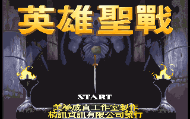
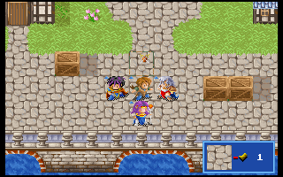

名稱：英雄聖戰1 (Heroic Holy War，中文版) 簡介：夢想成真1996年出品的策略角色扮演遊戲，由精訊代理發行 [待補]。

保護：光碟版為光碟，磁片版為顏色密碼，磁片版破解碼： HERO.EXE 8B 54 02 3B D3 75 0D 89 8C -- 8B -- -- 00 或 74 05 EA 1B EB -- -- -- 備註：光碟版安裝時，執行HDINST.BAT安裝硬碟版，執行CDINST.BAT安裝光碟版（遊戲本體 在光碟裡）。後者執行光碟上的HERO.BAT進入遊戲，並以C:\G2S為資訊存檔目錄。